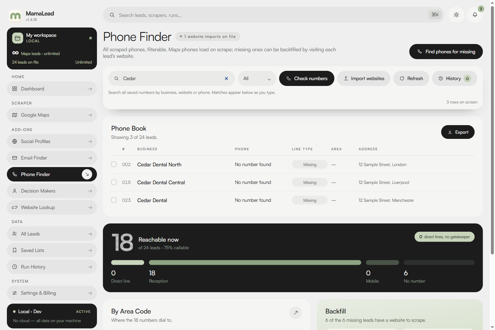
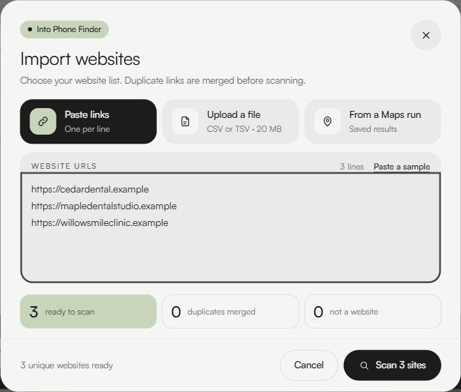
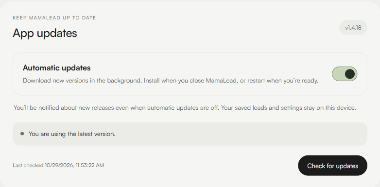
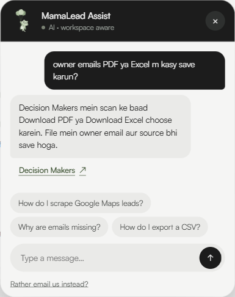

Automatic updates, your choice
Turn on background downloads in Account. Get a new-release notice, follow progress and restart when you are ready. Your leads and settings stay on this PC.
Collect businesses from Google Maps, find the contact details their websites publish, and keep your results on your PC. Search saved records while you type, find owner emails in a separate workflow, and export a clear PDF or Excel file.
Scrape and organise leads on your PC. Explore the latest app below; screenshots use an illustrative sample workspace.
Enter keywords and a city. MamaLead uses its own browser profile, with an optional visible window and Google sign-in. It saves the name, address, phone, website, rating and review count. Set one total lead limit; the run stops at that limit or earlier when fewer results are available.
Screenshot: Google Maps page, before a run.
Read public website pages for business emails, phone numbers and social links. Use Website Lookup to choose the details you need, or the separate Decision Makers workflow for sourced owner emails.
Screenshot: Email Finder and its cascade.
Search and filter your saved leads, keep useful businesses in named lists, and export branded PDF or Excel tables straight to your computer.
Screenshot: All Leads, the permanent store.
LATEST APP UPDATES · 1.4.18
Turn on background downloads in Account. Get a new-release notice, follow progress and restart when you are ready. Your leads and settings stay on this PC.
MamaLead Assist keeps replies concise and adds the relevant page name below the answer. Click it to open a module, Reports or App updates.
Click anywhere on an unread card to mark it read. All/Unread, Mark all read, delete with Undo and links to the related result remain available.
Send a saved Maps run or selected leads to Decision Makers. Businesses with shared websites or no website stay in the scan, with the full lead count shown before you start.
Decision Makers shows the percentage checked, completed and remaining leads, and current business. Stop scan keeps completed results. A finished check may still have no published email.
Asks for the owner and email together, then uses one named email query only if needed. Source-page and search-index evidence stay distinct in the app, PDF and Excel. Generic and guessed emails stay out.
Type a name, email, phone or profile URL. Related saved matches appear below the search bar; a complete phone number narrows to exact matches.
Open earlier finder searches from History, or revisit a whole Maps run with Saved searches. Your search history stays available when you reopen the app.
Paste links, open the Windows file picker for CSV/TSV, or reuse a Maps run. Website imports show ready, duplicate and skipped counts alongside their Scan controls.
Email Finder shows one main email published on each business website. Choose validity on the page or check the current results later. Follow the checked count and use Stop checking when needed.
Repeated links to the same account are merged. Profile results leave out share, login, post and video links, with saved company and profile search as you type.
Website Lookup moves to its results when the scan finishes. Review the published details and source pages, then export the current scan or selected websites.
Click any module to see what it does, where it lives in the app, and its screen.
YOUR EVERYDAY WORKFLOW
Phone Finder prioritises the website's main contact number, keeps extra numbers one click away and preserves saved Maps numbers. Targeted checks keep scans responsive, with bounded waits for slow websites.
Email Finder keeps one main email published on each business website, including Contact Us pages found through links and sitemaps. Optional validity checks apply to the current list.
Website Lookup lets you choose emails, phones, social profiles and addresses separately. When the scan finishes, its results come into view with each site's status and sources.
PDF and Excel files include the MamaLead logo, column headings and properly arranged rows. Owner-email exports keep Owner, Business, Owner email and Source columns, with the search-index evidence label when applicable.
Open an earlier city or keyword run from Saved searches and export just that run. The current scan continues to show its own leads in Results.
Click an unread notification card to mark it read. Notifications has All and Unread views, read controls and delete with Undo. Open the related result, revisit a saved Maps run or reveal an exported file in its folder.


APP UPDATES
Open Settings & Billing → Account and enable Automatic updates for background downloads. New-release notices appear even when you prefer manual updates.
See progress, then choose Restart to install or install when you normally close MamaLead. A download finishing does not interrupt your work with a forced restart.
Checks run while the app is open. New features reach users when a release is published.
MAMALEAD ASSIST
Get help with the app in English, Urdu, Roman Urdu and other supported languages. Roman Urdu stays in Latin letters, including short follow-ups, rather than switching to Hindi. Ask explicitly if you want a different reply language.
Replies stay concise, with the relevant page-name link directly below the answer. Open Social Profiles, Email Finder, Decision Makers, Reports or App updates with that link. No personal AI-provider key is needed.
Internet access and your plan's AI allowance apply. Assist provides guidance; it does not run app actions for you.
Results depend on public information the website makes accessible. Missing details stay blank; published contact information is not a guarantee of an active mailbox or an answered phone.
Your lead database stays on your PC. Activation and billing use the MamaLead service; optional Assist messages and limited workspace context pass through it to the AI provider.
Every lead, run and saved list is written to one SQLite file on your machine.
Activation sends a hashed device ID and OS label to our license server. If you use MamaLead Assist, your message and workspace context go to its AI provider.
Download first, then activate an emailed trial or Lifetime key in Settings & Billing → Account for Maps. A paid Decision Makers pass activates on the purchasing device without a separate key. If you connect Google, its sign-in opens on Google's own page.
Copy leads.db somewhere safe and you have a full backup of your data.
Your lead database stays on your device. See your plan, usage and invoices inside the app.
Download the desktop app freely. Choose your plan after installation.
Core features for 24 hours from first activation, including up to 300 Google Maps leads across any keywords. One trial per email and one machine.
Open the app and click Open Settings & Billing in the welcome notice. Request a trial key in Usage, then enter the emailed key in Account. Your 24 hours begin when you activate.
Launch price for a limited time. The lifetime price will increase later.
Unlimited Maps, email, phone and social lookups for life on up to two machines. Your first 30 days of Decision Makers include 1,000 searches.
Choose Buy now in Settings & Billing. Enter your email and card on Stripe Checkout. After verified payment, we email your Lifetime key and the app opens Account for activation.
Download app to buy LifetimeBuy this pass on its own, or after the 1,000 searches included with Lifetime have ended. A standalone Decision Makers pass does not unlock Maps scraping.
Already installed? Subscribe opens the app and takes you straight to Stripe payment. Otherwise, the Windows download starts automatically. The app shows your access and alerts when 500 or 100 searches remain.
Subscribe · Rs 1,000Choose your plan in the desktop app under Settings & Billing → Usage.
The app shows your remaining Maps leads and Decision Makers searches under Settings & Billing → Usage.
Step 1 · Download
Save the Windows installer to your computer.
Step 2 · Install and get started
Open the installer, choose your install folder, and launch MamaLead. The app will guide you through getting started.
The Windows installer is signed by Nafran LTD. Windows SmartScreen may still show a reputation warning for a new release. Check that the publisher is Nafran LTD before proceeding.
{{ f.a }}
{{ cur.shotCaption }}
{{ cur.lead }}